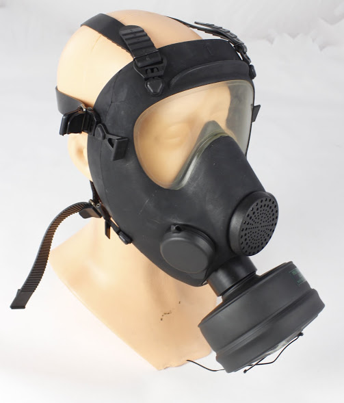

Спочатку ANP-VP F1 розроблений в кінці 80-х інженерами французької компаніїї Nexter (раніше відомий як GIAT Industries). Перші екземпляри протигаза надійшли на озброєння французької армії під час війни в Перській затоці, де він себе відмінно зарекомендував.  В середині 90-х на дану модель протигаза звернули увагу угорські та польські збройні сили для заміни своїх морально застарілих моделей протигазів. Була куплена ліцензія на виробництво зазначеної моделі і пущений в серійне виробництво в Угорщині під маркою 93М в Польщі МР-5. З 2006 року протигаз проводиться нашим підприємством "Ікар" під маркою МП-5У (військовий варіант з питним пристроєм) і прийнятий на озброєння в Збройних силах України. Таким чином дана модель протигаза стоїть на озброєнні 4-х країн Європи: в Україні - МП-5У, Франції - ANP-VP F1, Угорщини - 93М, Польщі - МР-5. На сьогодні МП-5У є найкращою моделлю протигаза в своєму класі.
Протигаз фільтруючий (стадарт НАТО STANAG 4155), виробництва ТОВ "НВП" Ікар "(Україна), призначений для захисту органів дихання і поверхні особи від впливу бойових отруйних речовин (БОР), радіоактивного пилу (РП) і біологічних аерозолів (БА) за рахунок очищення (фільтрації) забрудненого повітря в фільтруючому-поглинає системі (ФПС) протигаза.Протигаз використовується особовим складом (персоналом) в умовах застосування зброї масового ураження (в атмосфері, що містить не менше 17 об'ємних відсотків кисню), не погіршує фізичних і психологічних можливостей людини виконувати свої основні функції в умовах бойової обстановки спільно з табельними озброєнням, засобами індивідуального захисту та зв'язку протягом 24 годин.